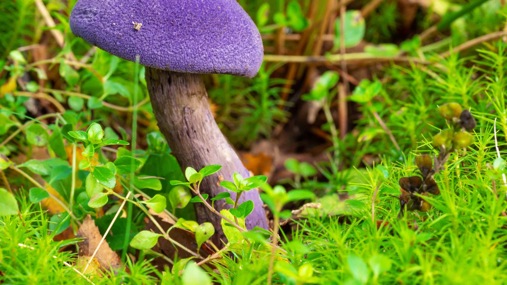
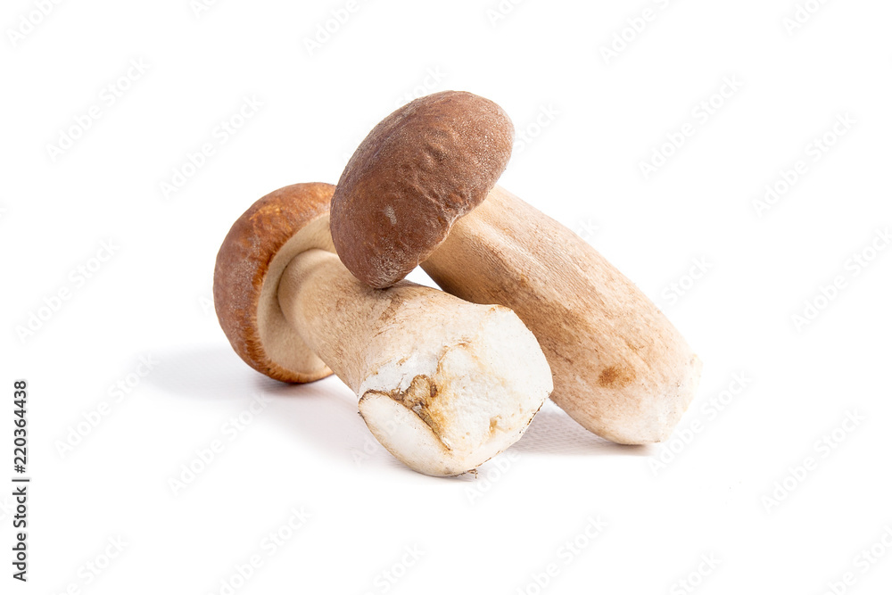
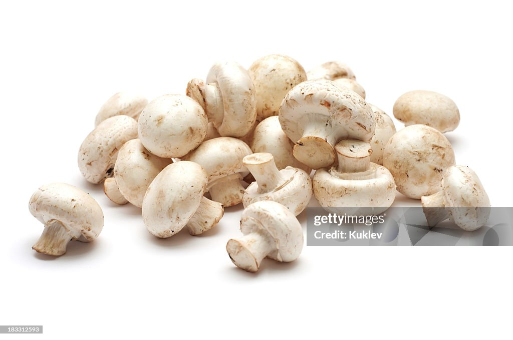
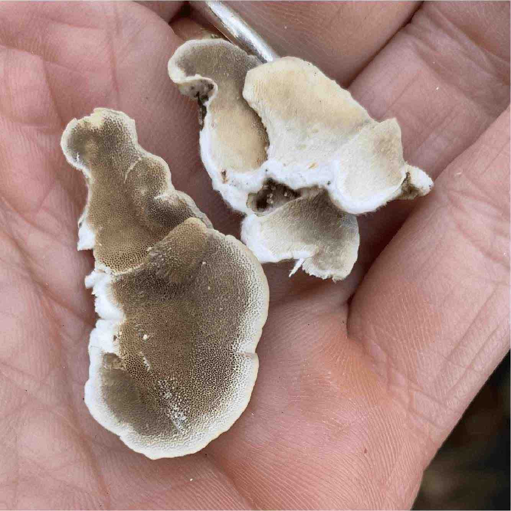

Six Types of Mushrooms
Below is a table of six mushrooms, with their genus, species, type, common names, and an image for each. Five are from the Mushroom Color Atlas, and Reishi is sourced from Wikipedia.
| Genus | Species | Type | Common Names | Image |
|---|---|---|---|---|
| Ganoderma | lucidum | Polypore / Medicinal | Reishi, Lingzhi |  |
| Cortinarius | violaceus | Gilled Mushroom | Violet Webcap |  |
| Cantharellus | cibarius | Gilled Mushroom | Golden Chanterelle |  |
| Boletus | edulis | Bolete | Porcini, King Bolete |  |
| Agaricus | bisporus | Gilled Mushroom | Button, Cremini, Portobello |  |
| Trametes | versicolor | Polypore | Turkey Tail |  |